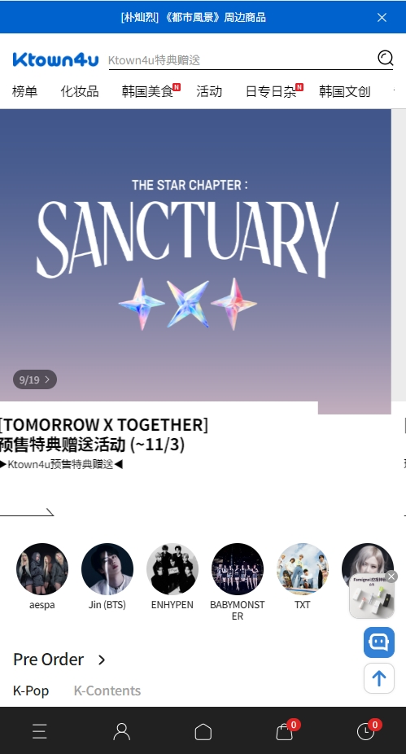

Ktown4u 到底值不值得掏钱？一个 K-POP 粉丝的账本
专辑定价一样、特典各平台独家、国际运费不便宜——在 Ktown4u 下单比找代购贵多少？自拍卡值不值这个差价？按使用强度算一笔明白账。
开头：一个让钱包发抖的问题
作为一个每张回归都想集齐自拍卡的 K-POP 粉丝，我手机里躺着四五个韩国购物 App，淘宝收藏夹里还有六个常年蹲的代购店。每次回归定专辑之前我都要做一轮比价：Interpark 的独家卡 A 好看，但 Yes24 送海报筒；代购省事但每张加价 30 块；直接上 Ktown4u 能拿到独家自拍卡，但国际运费又要多掏一笔。
它到底值不值得掏钱？ktown4u app官网 这个 App 本身是免费的，零门槛就能装就能逛。但"掏钱"这两个字对我们粉丝来说，指的是最终落在专辑+特典+运费上的那张账单。同样一张专辑，在不同渠道买下来总价可能差出一张小卡的钱，而能拿到的东西可能差不止一张小卡。
我花了大半年同时在 Ktown4u 和两个代购店里下过单，把账本翻了一遍，给还在犹豫的人算明白。
定价拆解：免费 App + 不免费的整套组合
先把最基础的账列出来。
App 下载 免费，iOS 和安卓都不收费，装完注册就能看商品、加购物车。但真正花钱的部分拆开看是三层：
第一层是专辑本身的定价。这个几乎所有渠道都一样——SM、HYBE、JYP 给各大平台的供货价差别很小，一张正规专辑大概 7000~15000 韩元（约 36~77 人民币），迷你专辑更便宜些。Ktown4u 不会在专辑定价上故意贵你几块，这一点和 Gmarket、Interpark、Yes24 基本持平。
第二层是国际运费，这才是账单里最大的变量。Ktown4u 的运费是按包裹重量和目的地算的，中国大陆发圆通或 EMS，一张专辑的运费大概在 80~150 人民币之间，买得多能摊薄但不会降到 50 以下。代购的优势就在这里——一个团的人一起寄，运费摊到每张专辑可能只要 30~60 块，差出来的就是实打实的钱。
第三层是Ktown4u 独家特典，也是它的核心护城河。其他平台各自有独家卡，但 K4 的自拍卡（Selfie Photocard）是粉丝圈里公认设计最用心的一档——经纪公司专门为 K4 的粉丝拍，不重样、不用专辑里的素材。预购期间下单就能自动拿到一张，发完即止，正式发售后大概率没了——详细规则可以去ktown4u app文档翻。这些卡本身在二手市场上能炒到 50~200 人民币一张，有些热门团的热门卡甚至更贵。
这三层加在一起，就构成了"在 K4 掏钱"的完整图景：你花的钱 = 专辑（市场价） + 运费（比代购贵） + 但能拿到一张有二级市场价值的独家卡。
算账：按使用强度分三档
账不算不知道，一算就明白自己属于哪一类。
轻度用户：一年买一两张
典型场景：你不是谁的死忠粉，只是偶尔看到一首歌喜欢、或者朋友说某张专辑设计好看就顺手买一张。这种情况其实很少见——毕竟能掏出 100 多块钱买一张 CD 的人，大概率已经有点入坑了。但如果真的是这种轻度需求：
免费版够不够——够看够逛够比价。但真要下单的话，我更建议你找代购或者直接在淘宝买现货。一张专辑 + K4 运费的总价，比代购价至少多出 50 块，换来的只是一张你可能不会特意收藏的自拍卡。花这 50 块去赌一张你未必会珍惜的卡，性价比太低。
结论：轻度用户别上 K4，代购或淘宝现货更划算。
主力用户：每个喜欢的团回归都跟
这才是 Ktown4u 的目标客群。假设你喜欢 2~3 个团，每张回归买 1~2 个版本，一年下来大概是 8~15 张专辑。这种强度我自己跑过一次完整的账本：
在 K4 下单的一年总支出：专辑费 + 运费 + 偶尔加购的海报筒 ≈ 1800~3000 人民币。其中运费大概占 400~800 块，是最大的额外支出。但你拿到了 8~15 张独家自拍卡。
现在算时间账：如果用代购，每张专辑你要蹲代购开团、等截止、等拼邮、等从韩国运回国内、等国内快递——整个周期大概 4~6 周。在 K4 下单，发货后 7~14 天就能拿到，而且全程自己掌控下单节奏，不用等任何人。
再算特典账：8 张独家卡就算平均每张在二手市场值 60 块，那就是 480 块。这个数字刚好抵得上你多花的运费。如果你本来就打算收卡，或者这些卡里有一两张你特别想要的，那这笔账其实已经打平了。
结论：主力用户闭眼上 K4。多花的运费 = 花钱买时间 + 花钱保底拿到你想要的卡，而且卡本身还有残值。
重度用户：多团多版本，卡坑深处
这种用户已经不需要看账本了——Ktown4u 是你必须有的一个渠道，甚至可能是最常用的那个。你不仅要收 K4 的自拍卡，还要收 Interpark 的 A 卡、Yes24 的 B 卡、Gmarket 的 C 卡，每个平台各下一单，然后比较哪张设计最好看、哪张在粉圈里溢价最高。
对你来说，运费不是成本，是收藏预算的一部分。你不会算"多花了多少"，只会算"没拿到哪张"。Ktown4u 在这个阶段承担的角色是：确保你不会错过那张最有价值的独家卡。毕竟其他平台的特典你还可以通过国内代购转单来补，K4 的自拍卡过了预售期真就没了。
还有一个重度用户才懂的优势：K4 App 的地址管理支持多地址保存，结算时一键切换——你可以分别寄给自己、寄给同担朋友当礼物、寄给中转仓再转卖。代购做不到这一点，团里都是统一个地址。
结论：重度用户 K4 必装必用，别犹豫。
替代方案：不付这笔钱还有没有别的路
有的，而且每条路都有自己的取舍。
Interpark / Yes24 / Gmarket：三家韩国本土电商，各自有独家特典。和 K4 一样支持国际配送，运费结构也类似。区别是 Interpark 更像综合电商、Yes24 偏文化品类、Gmarket 走大众消费品。如果你特别喜欢某个平台的独家卡，可以分平台下单——这也是重度用户的常规操作。但 App 本地化程度不如 Ktown4u，中文界面不完善，新人上手有门槛。
韩国代购：淘宝或微店找靠谱代购走团购。优势是运费低、省心，代购帮你搞定下单、拼邮、清关。劣势是你看不到实时库存（代购那边经常卖完了才通知你）、特典有概率被代克扣下、整个流程依赖代购的人品和效率。我自己踩过一次坑：代购说没拿到特典给我退了 10 块，结果我后来在闲鱼看到同款自拍卡卖 120 块——这笔买卖我亏大了。
韩国朋友帮带：如果你有朋友在韩国，这是理论上最完美的方案——没有国际运费、可以直接去 Ktown4u 线下门店（首尔 COEX 那个四层楼特别好逛）、能拿到线下门店的独家赠品。但前提是你真的有这么一个朋友，而且人家愿意帮你搬一箱子专辑回来。
国内现货：淘宝或闲鱼上有人卖已清关的现货专辑，价格比直接买贵一点（通常加价 20~50 块），但运费就是普通快递价。适合你想买的那张已经过了预售期、但又不急着要特典的情况。
最后：三秒对号入座
不想算账？那就看这一句话：
你会不会为了一张设计好看的独家自拍卡，愿意在专辑原价基础上多花 50~100 块运费？
会 → 装 Ktown4u App，趁预售期下单，卡拿到手之后要么自己收藏要么闲置回血。
不会但也不介意 → 对比一下代购总价和 K4 总价，如果 K4 只贵出 30 块以内也可以直接下，省得等代购。
完全不想多花 → 老老实实找代购或者蹲现货，别碰 K4。
还有一个隐性成本没提：Ktown4u App 有推送通知，特典活动截止、新专辑上架、限时优惠都会弹窗提醒。如果你对这些信息敏感，这本身就是价值——错过了预售期的特典，再想要就只能在二手市场花大价钱收了。
资料同步
最后说一句，Ktown4u 的中文资料我同步到了 GitHub、Gitee、GitCode 三个仓库，特典发放规则、国际物流时效这些细节哪里访问顺畅看哪个就行。
